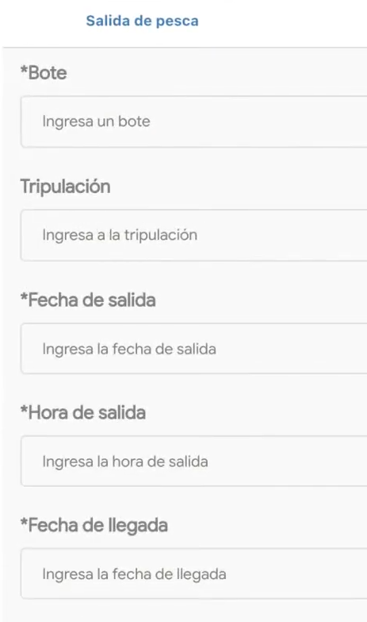
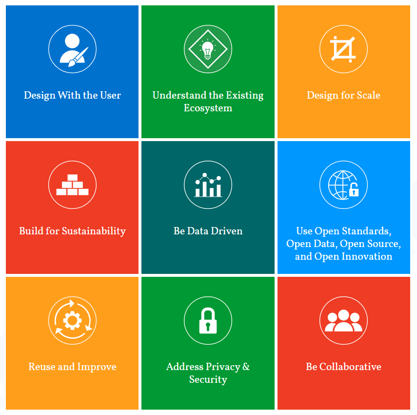

Matt Ziegler
ICT4D: Mobile phones in "development"
Phone-based development projects
Example Problems
Technology access disparities
→ reinforce inequities
Top-down control
Discrimination in online spaces
Ocean Tech Initiatives
Mobile apps
IUU / catch data / monitoring
information services, extension
AI
predictive enforcement
project/resource targeting
Blockchain
fish traceability
carbon offset verification
Internet of Things
“Smart oceans”
???
⇄
Computer Science Topics
Human-Computer Interaction
Critical HCI theory
Feminist HCI
Social computing
Usable security
Accesability
eCivics / Digital Democracy
ICT4D / Computing for “Development”
Algorithmic Fairness
Tech Policy
Project #1: Reimagining app-based fishery certification

Project #2: Policy tool
Model: Digital Development Principles
